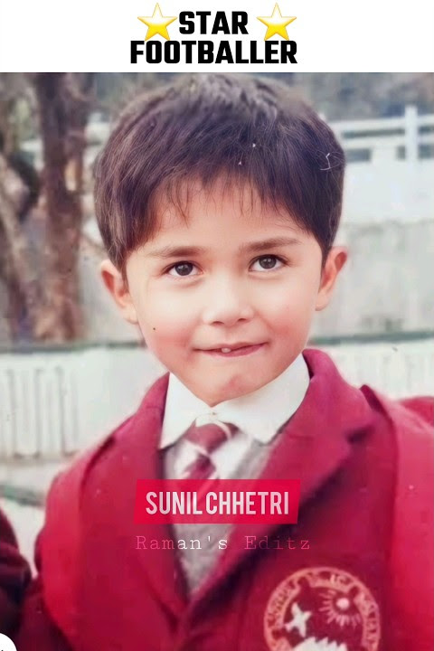
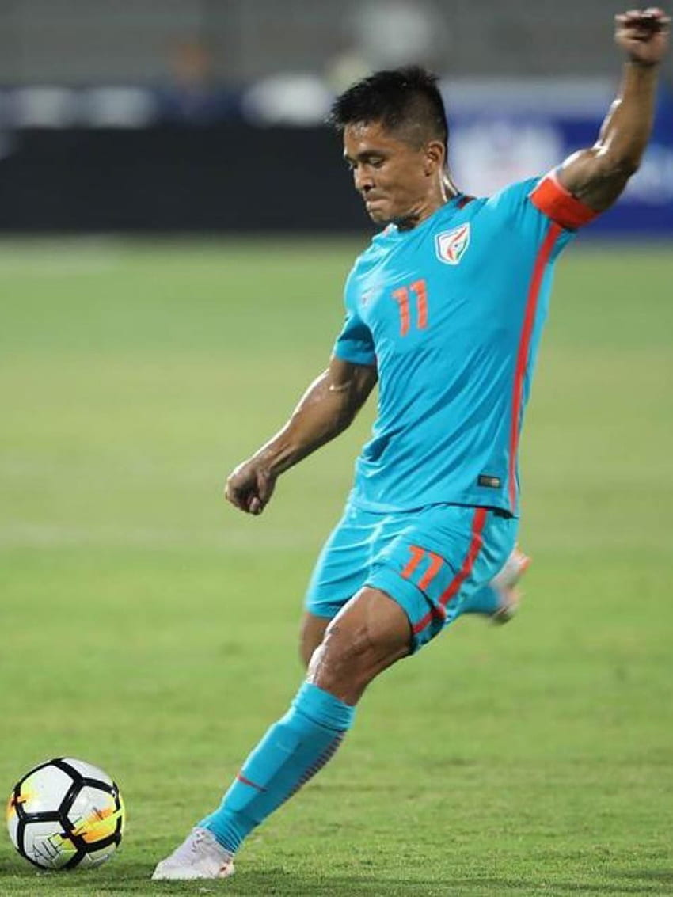
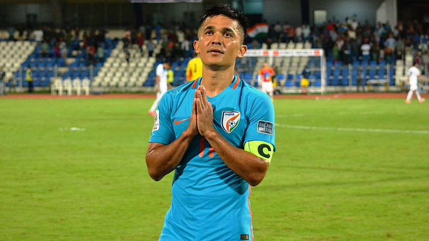
 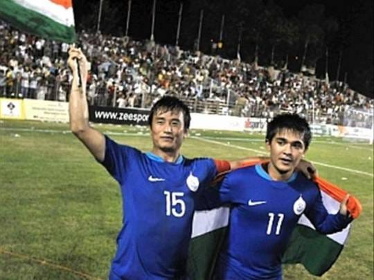
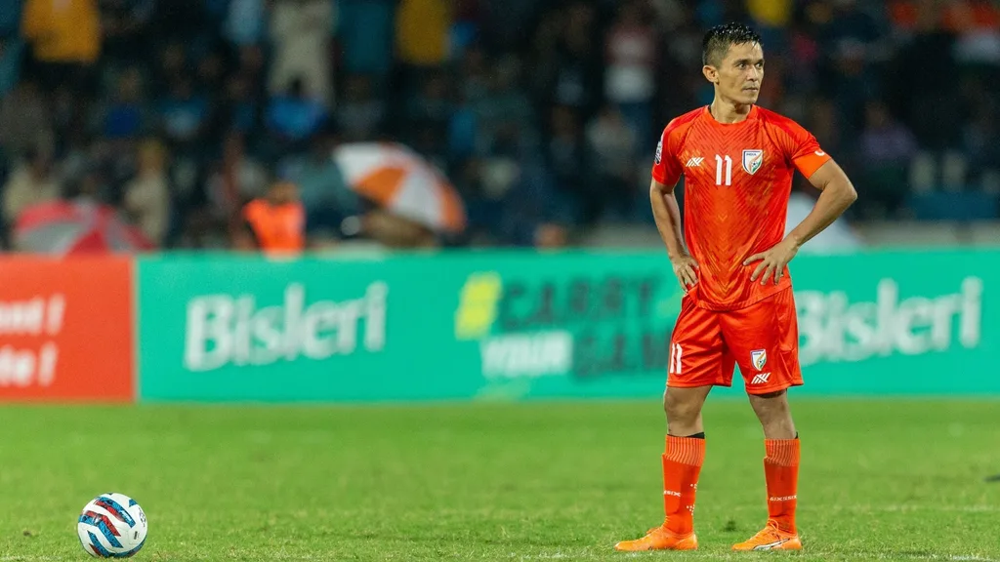
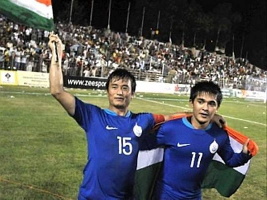
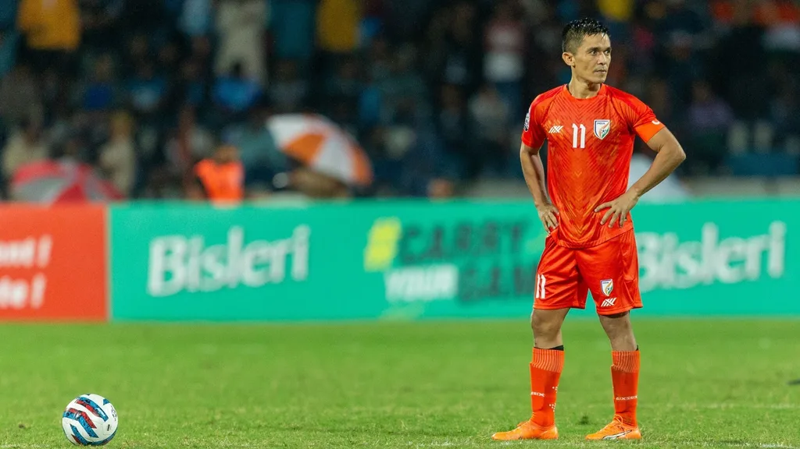

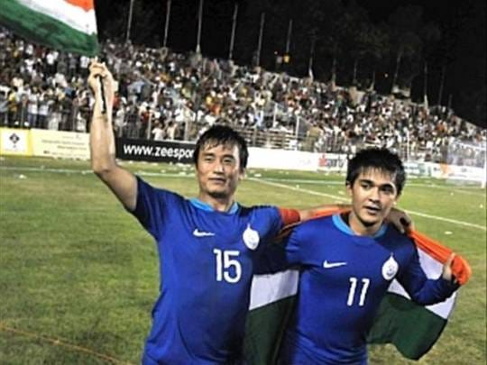
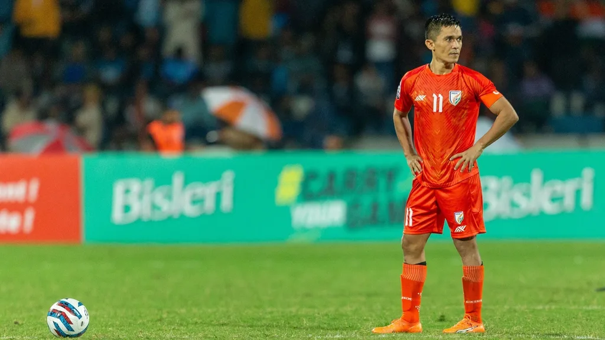
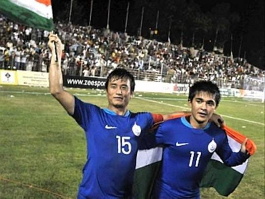
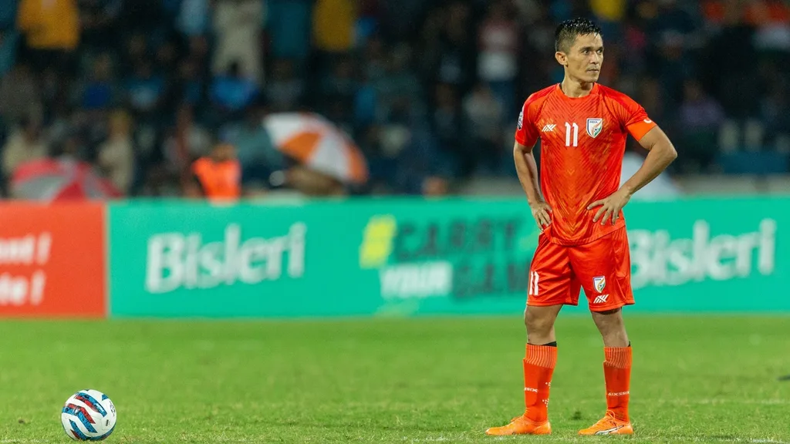
Sunil Chhetri is a renowned Indian footballer who is often considered one of the greatest football players in the history of Indian football. He is journey in football has been a remarkable one, marked by dedication, talent, and a strong commitment to the sport.
"Become the player you dream of being, and every day on the field will be a step closer to your footballing destiny."
Sunil Chhetri is born in Secunderabad ,Telangana, on India's First-largest Country.
Chhetri's early football journey included playing for his school and local clubs in Delhi.
His talent was recognized early, and he joined the prestigious Tata Football Academy
(TFA)in Jamshedpur, which provided him with professional training and exposure to
higher-level
competition.
Chhetri started his senior club career with Mohun Bagan in the I-League (formerly known as
the National Football League). He quickly made an impact as a forward.
Over the years, he played for various Indian clubs, including JCT, East Bengal, and
Bengaluru FC.
At Bengaluru FC, Chhetri achieved significant success, winning multiple titles and helping
establish the club as a prominent force in Indian football..


Chhetri made his debut for the Indian national football team in 2005.
He has been the captain of the Indian national team for an extended period, leading the team
in
numerous international competitions.
One of his career highlights was representing India in the AFC Asian Cup in 2011 and 2019
and SAFF Championship.
Chhetri has received several awards and accolades throughout his career. He has been named the AIFF Player of the Year multiple times and has also received the prestigious Padma Shri,one of India's highest civilian honors, for his contributions to Indian football.


Sunil Chhetri's father was in the Indian Army, and his family hails from a background with a
strong military connection. His parents have been supportive of his football career.
Sunil Chhetri has one younger sister named Bandana Chhetri. She is known to be supportive of
her brother's career and achievements.
As of my last update, Sunil Chhetri is married to Sonam Bhattacharya. Sonam is the daughter
of Subrata Bhattacharya, a former Indian footballer and coach. Their marriage in 2017 was a
notable event in the Indian sports community.

"It doesn't matter where we play; it's the Indian jersey that I'm playing for, and I will give my 100%."
"Football is not just a game; it's a passion, a lifestyle, and an emotion."
"I am always excited to represent my country. It's an honor and a privilege to wear the Indian jersey."

Hello, I'm Sunil Chhetri, Indian Footballer.
Thank you for enjoying My journey.
And
please, support indian Footballer team , Everything is going to be fine.
Plase understand.